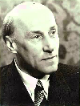

 Wilhelm Busch (ur. 27 kwietnia 1897 w Elberfeldzie (obecnie część Wuppertalu), zm. 20 czerwca 1966 w Sassnitz). Był synem pastora również Wilhelma Buscha i Joanny Busch z domu Kullen.
Uczestniczył w I wojnie światowej jako oficer. Po demobilizacji studiował teologię ewangelicką na Uniwersytecie w Tybindze. Następnie odbywał wikariat w Gellershagen koło Bielefeld. Był kaznodzieją w Bielefeld, a od 1924 pastorem w Essen. Tam też był w latach 1929–1962 duszpasterzem młodzieżowym. W okresie III Rzeszy działał jako członek opozycyjnego wobec nazizmu Kościoła Wyznającego. Jego bezkompromisowa względem władz państwowych postawa, wyrażana podczas publicznych kazań, ściągnęła na niego szykany Gestapo. W tym czasie był wielokrotnie więziony. W 1962 przeszedł na emeryturę. Napisał wiele pozycji literatury pobożnościowej przetłumaczonej na dziesiątki języków obcych.
Po upływie wielu lat kazania Wilhelma Busha są wciąż popularne w Niemczech i w innych krajach. Jego najbardziej znaną pozycją w polsce jest bestsellerowa książka "Jezus naszym przeznaczeniem".
Tekst pochodzi z książki "365 razy On" nabytej w sklepie internetowym "Szaron".
Link do strony:
https://szaron.pl/